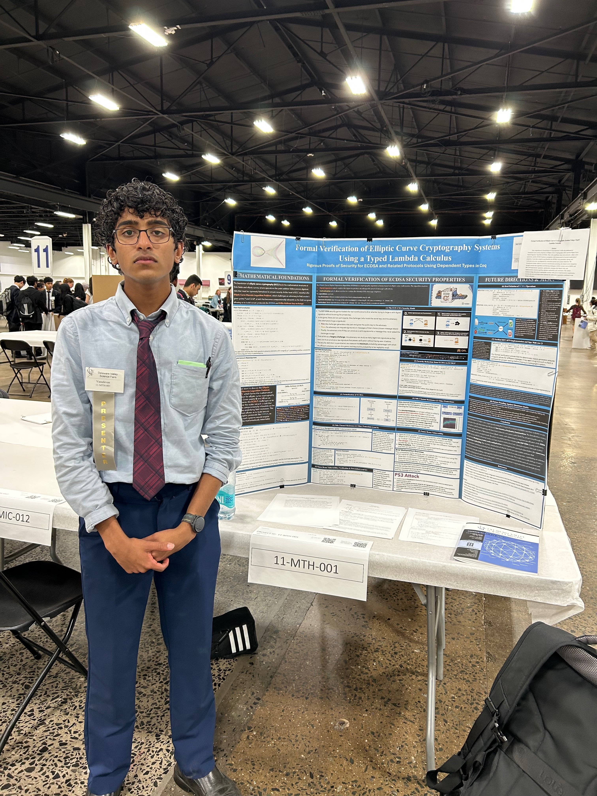

Bidmachine
Bidmachine is an advanced contract bid evaluation engine that automatically scores, ranks, and audits supplier proposals.
The system ensures full transparency and accountability, flags potential anomalies, and generates downloadable audit reports for compliance purposes.
Its modular design allows organizations to adapt scoring criteria to their specific requirements, making it ideal for government and corporate procurement processes.
|
Nakashima Bundles on Calabi-Yau (N+2)-folds
This project explores stable vector bundles over Calabi-Yau (n+2)-folds.
Following Tohru Nakashima, we establish fundamental results regarding the structure of these "Nakashima Bundles'" moduli spaces by demonstrating that they form a projective scheme of finite-type over an algebraically-closed field.
|
Formal Verification of ECC via Typed Lambda Calculus
This project presents a rigorous formalization of Elliptic Curve Cryptography (ECC) and the ECDSA using the Coq proof assistant.
Using dependent type theory, it establishes machine-checked proofs of security properties including signature correctness, unforgeability, and side-channel resistance.
The framework extends from finite field arithmetic through curve operations to cryptographic protocols, emphasizing practical vulnerabilities such as nonce reuse, timing attacks, and signature malleability.
It lays the foundation for verifying quantum-resistant cryptographic schemes.
|
Other Projects
Placeholder for additional projects. Each project can include a description, technologies used, and real-world impact.
|
|

|